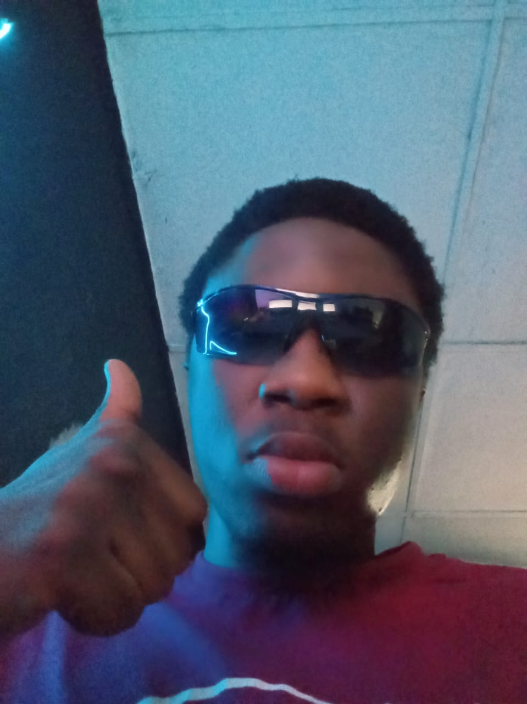

// PAGE 04
ART
POETRY ANTHOLOGY, VERSES & VISUAL EXPRESSIONS
// 02. POETRY ANTHOLOGY & SELECTED VERSES
POEM #01
POETRY
// VERSE & LYRICS
[ FIRST POEM TITLE ]
[ Stanza 1: Write or paste your first stanza here.
Rhyme, meter, or free verse.
Ready for your lyrical cadence. ]
[ Stanza 2: Write or paste your second stanza here.
Express your imagery, feeling, and thought. ]
POEM #02
POETRY
// VERSE & LYRICS
[ SECOND POEM TITLE ]
[ Stanza 1: Write or paste your first stanza here.
Explore language, silence, and truth. ]
[ Stanza 2: Write or paste your second stanza here.
Reflect on the world, light, and shadows. ]
POEM #03
POETRY
// VERSE & LYRICS
[ THIRD POEM TITLE ]
[ Stanza 1: Write or paste your poem or prose poem here.
Craft your rhythm and line breaks. ]
[ Stanza 2: Final lines and resolving cadence. ]
// 03. VISUAL ART & PHOTOGRAPHY
VISUAL #01
PHOTOGRAPHY
// SHADOWS & AESTHETICS
[ VISUAL PIECE 01 TITLE ]
[ Enter the description, medium, mood, or story behind this photographic / visual work. ]
VISUAL #02
DIGITAL ART

// CYBER & EXPERIMENTAL
[ VISUAL PIECE 02 TITLE ]
[ Enter the creative computation concept, lighting, or narrative behind this piece. ]
VISUAL #03
COMPOSITION

// FORM & LIGHT
[ VISUAL PIECE 03 TITLE ]
[ Enter the visual statement, captured moment, or creative direction here. ]
// 04. SPOKEN WORD & AUDIO PERFORMANCES
AUDIO // PERFORMANCE 01
RECITAL
[ SPOKEN WORD RECITAL TITLE ]
[ Enter recital details: spoken voice, poem recital with instrumental backing, or live reading recording. ]
PUBLICATIONS & EXHIBITIONS
LITERARY
WORDS IN PRINT & PUBLIC
[ List any journals, literary magazines, anthologies, recitals, or creative showcases where your work appeared. ]
[ PUBLICATION / SHOWCASE 01 ]
[ 2026 ]
[ Outlet / Venue / Details ]